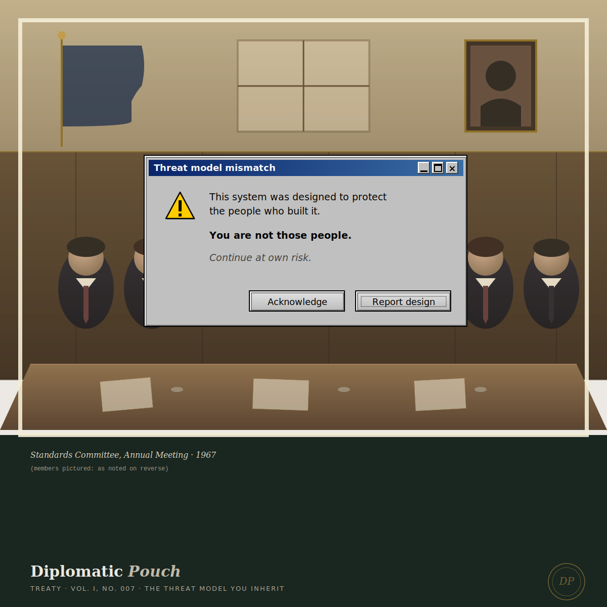

The Threat Model You Inherit
Why your team's composition determines what your security program can see.

A threat model is a story about who might want to harm you, what they would gain, and how they would try. Every security program is built on top of a threat model. Most security programs do not realize how narrow their threat model actually is, because they have inherited it from the people who designed it, and those people could only model the threats they had lived close enough to imagine.
I want to make a careful argument that hiring for threat-model breadth is not a diversity initiative. It is a security practice. The team you build determines the threats your program can see. The threats it cannot see are the threats it cannot defend against. That is a security problem, not a values problem, and treating it as a values problem is part of why so many security programs are sleepwalking through risks their composition will not let them perceive.
I want to spend this treaty making that argument carefully, because I have made it in client engagements for years and I have seen it land or fail to land based almost entirely on whether the security leader hearing it could separate the security argument from the political argument. The two are related. They are not the same. The reader I am writing for is a security leader who has rejected the political argument and who I am asking to reconsider on security grounds.
The inheritance problem
Threat modeling, as a discipline, asks the architect to imagine adversaries. Who might attack this system? What are they trying to get? What are they willing to spend? What are the attack paths? What are the defensive controls that would close each path?
The discipline assumes that the architect can imagine the attacker. It assumes that imagination is roughly uniform across architects. It does not, in most current implementations, examine what shapes the architect's imagination — what experiences make some threats vivid and other threats invisible to the same architect, working with the same training, holding the same certifications.
An architect who has spent their career inside well-resourced institutions, with well-defended endpoints, with users who broadly trust the systems they use, will imagine attackers from that frame. They will model the sophisticated external adversary, the nation-state actor, the insider who turns malicious. They are good at those threats; they have read about those threats their whole careers; the literature they have been trained on uses those threats as canonical examples.
The threats they will not naturally imagine are the ones they have not lived: the user whose recovery flow fails because their identity documents do not match the system's assumptions about names. The user who avoids the platform entirely because past experiences with similar platforms have taught them to expect harm. The user whose access pattern is flagged as anomalous because the modal user in the training data did not look like them. The user whose abuser controls their phone. The user whose government has decided their existence is a problem. The user whose name has multiple correct spellings depending on the script they are writing in.
These are real threats. They are real failures of the security system when they occur. They produce real breaches, real lockouts, real loss of trust, real harm to real people who depended on the system to be what it claimed to be. They are also, almost without exception, missing from the threat model the architect produced.
This is the inheritance problem. The threat model is inherited from the architect's imagination. The architect's imagination is shaped by the architect's experience. The architect's experience is shaped by who the architect has been, what neighborhoods the architect has lived in, what populations the architect has interacted with as a peer rather than as a subject. There is no neutral threat model. The threat model your team produces is the story your team has been able to live.
Three case studies
I want to ground this in specifics, because the abstract version of the argument is easy to dismiss as politics. The argument is not politics. The argument is a security argument that has political implications. The implications are not the argument.
Facial recognition and the threat of differential accuracy. The Gender Shades research published by Joy Buolamwini and Timnit Gebru in 2018 showed that commercial facial recognition systems performed at very high accuracy on light-skinned men and at substantially lower accuracy on dark-skinned women. The disparity was not subtle. The disparity was not the result of one bad system. The disparity was a consistent finding across the major commercial vendors.
This was not a bug. It was a threat-model failure. The teams that built those systems did not model a threat in which the system would be deployed against populations whose faces had been underrepresented in the training data. They could not model that threat because they had not lived close enough to it to imagine it. The systems shipped. The harm occurred. The accountability conversation took years. Some of the vendors have since improved their systems. Some have stopped offering facial recognition for sensitive use cases. None of them have publicly acknowledged that the failure was a threat-model failure that their team composition predicted in advance and that adding people to the team who would have predicted it was a security investment, not a values investment.
The lesson is not that facial recognition is bad. The lesson is that the team that builds a system models the threats it can imagine. The team that built those systems imagined certain threats and not others. The threats they did not imagine became the threats the system was vulnerable to.
MFA fatigue and the threat of the tired admin. MFA fatigue attacks succeed at major enterprises because the systems were designed by teams who imagined a user who reads each push notification carefully and pauses before approving. The real user is an overworked help desk admin getting forty MFA prompts a day, half of them legitimate and half of them noise, and who is going to approve the next one without reading it because that is the only way to get through the queue before the end of the shift.
The threat model that produced the MFA architecture did not include that user, because the people building the system did not work in roles that experienced that volume of authentication requests. They were engineers who used MFA themselves, three to four times a day, in contexts where pausing to read the notification was easy and reasonable. They built a system that worked for them.
The threat was foreseeable. There were teams inside the same organizations who could have foreseen it. Those teams were either not in the room, or were in the room but did not have the authority to alter the architecture. The result was a category of attack that has cost organizations many billions of dollars and that has been described, in the post-incident analyses, as a failure of user training rather than a failure of architecture. The user training framing is itself a threat-model failure. It assumes the user is the variable that should change to accommodate the system, rather than the system being the variable that should change to accommodate the user.
Account recovery and the threat of coercive control. Account recovery flows lock out victims of intimate partner violence at much higher rates than other users, because the recovery flow assumes the user has unencumbered access to a phone, an email, and a credit card on file. The user who controls all three is the user the recovery flow was designed for. The user whose abuser controls the phone, monitors the email, and has authorized charges on the credit card is the user the recovery flow was not designed for, and is the user for whom recovery is most urgent.
The threat is well-documented in the social work literature. It is rarely documented in the security architecture literature, because the architects were not reading the social work literature, because the architects had not lived close to that threat, because the architects were composing the threat model out of their own experience of identity recovery, which had never required them to navigate around a person who wished them harm.
This is not a minor population. The CDC estimates that approximately one in three U.S. women and one in four U.S. men experience intimate partner violence in their lifetimes. Some meaningful fraction of those users are interacting with your recovery flow today. The recovery flow is failing them in ways that your security metrics do not measure, because the metrics do not flag a recovery as failed when the user could not initiate it in the first place.
What this means for your team
I want to be precise about what I am and am not arguing.
I am not arguing that you should hire people from marginalized backgrounds because it is the right thing to do, although I do believe that. I am arguing that the threat model your security program operates on is a function of your team's composition, and a narrow team produces a narrow threat model, and a narrow threat model produces a security program that fails in predictable ways for predictable populations. The failure is not a moral problem that has security consequences. The failure is a security problem that has moral consequences. The distinction matters because it tells you what you are actually buying when you change the composition of your team.
Hiring for threat-model breadth means hiring people whose lived experience extends your team's imagination. This includes, but is not limited to, hiring across race, gender, class, disability, and immigration status. It also includes hiring across functional experience: someone who has worked at the help desk, someone who has worked in identity recovery operations, someone who has done social work with survivors of abuse, someone who has built identity systems for users in low-bandwidth environments, someone whose name does not transliterate cleanly into Latin script. The breadth matters more than any single dimension of it.
Once you have the team, listen to them when they speak. The most common failure mode I see in security organizations that have hired for breadth is that the senior architects keep making the same architectural decisions they were making before, and the broader perspectives never make it into the threat model that gets shipped. The composition only matters if the composition has authority over the design. A team with breadth and no authority is a team that has been hired for political appearance, not for security improvement. The composition will not change anything about the program. The investment will not produce the security return that it was intended to produce.
The authority question is the question. Composition without authority is theater. Authority without composition is the original problem in a new room. Composition with authority is the only design that produces the security improvement.
What I tell consulting clients
When a security leader brings me in for a strategic engagement on threat modeling, I do not start with the threat model. I start with the team.
I ask: who is on the architecture review board? What is their professional lineage? What populations of users have they spent significant time with, professionally or personally? What threats has anyone on your team lived through directly that the threat model does not currently cover? What populations of your users are most likely to be flagged as anomalous by your detection systems, locked out by your recovery flows, or silently underserved by your access controls — and is anyone on your team in a position to advocate for those populations during architecture review?
Almost always, the answers reveal that the architecture review board is composed of people whose threat-model imagination overlaps significantly. They are competent. They are senior. They are good at the threats they have been trained on. They are also collectively blind to certain categories of failure that will, predictably, become breaches.
The remediation is not to fire anyone. The remediation is to add to the room. Add a junior person from a different background with authority to challenge the threat model. Add an external advisor who has worked with populations the existing team has not. Add a working group whose explicit job is to surface threats the main team is not modeling. Make these additions structural, not symbolic. Give them seats in the architecture review meetings. Give them veto power over specific classes of architectural decision. Give them the budget to bring in research that the main team has not been reading.
This is not cheap. It is also not as expensive as the breaches you will have when you do not do it. The cost-benefit math is unambiguous, but only if you are counting all the costs. Most security programs do not count the costs of the populations they are silently failing, because the metrics do not surface those costs as failures. Once you start counting them, the math is not close.
The pouch
A diplomatic pouch is built large enough to carry what the institution decides is worth carrying. The institution makes that decision through the people it puts in the room where the pouch is sealed. The cybersecurity field is in the middle of an extended decision about whose threats it considers worth modeling and whose harms it considers worth preventing. Every security leader is, whether they realize it or not, casting a vote in that decision every time they assemble a team, every time they approve an architecture review, every time they sign off on a threat model that does not include populations the team is not equipped to imagine.
I am writing this newsletter, in part, to make the argument that the pouch can be large enough to carry the populations the field has historically left exposed. The first step in making it large enough is composing teams that can imagine those populations exist. The second step is giving those teams the authority to alter the design. The third step is letting the design reflect the threats your composition has made imaginable.
The threat model you inherit is the threat model your team has been able to live. The threat model you build is the threat model your team can imagine into being. The gap between the two is the work of the next decade.
Next dispatch ── Cable. When the audit lies.
— Dr. Safi Mojidi